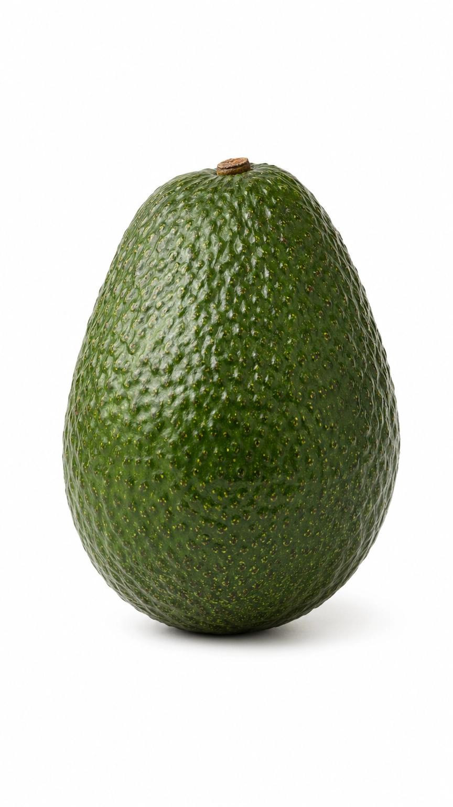
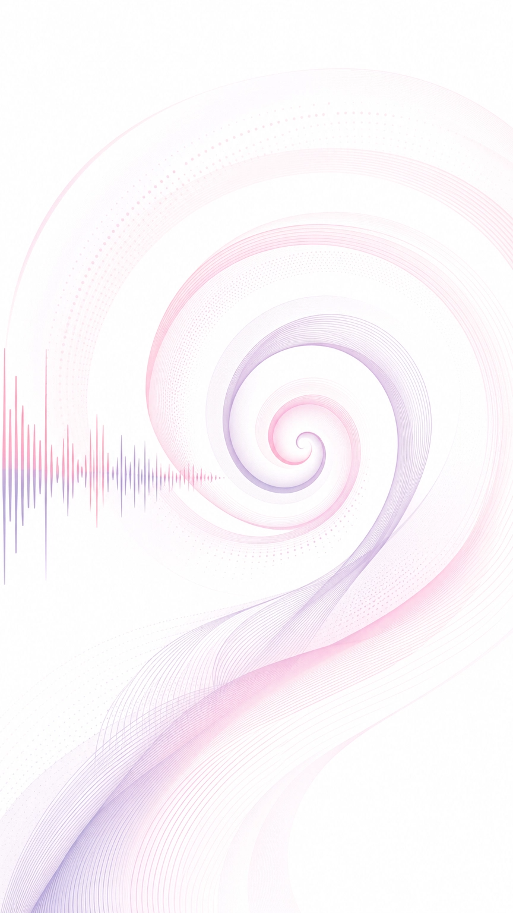
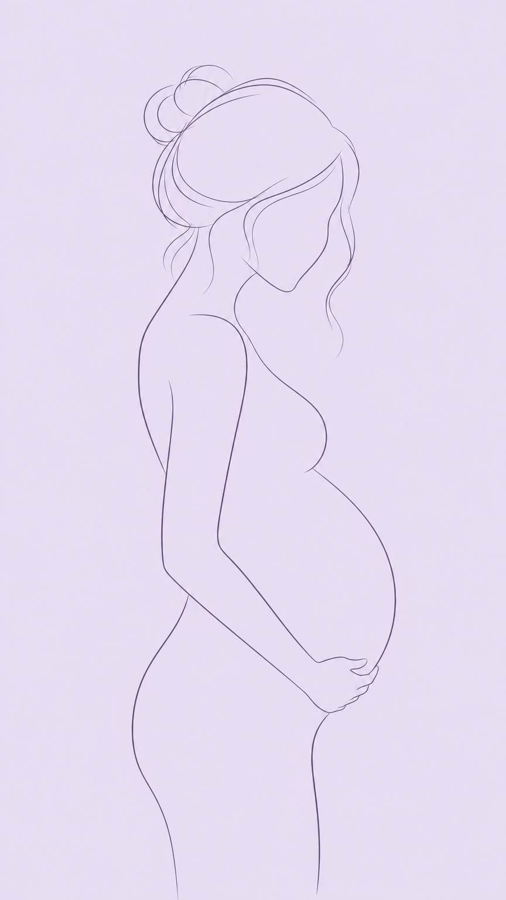
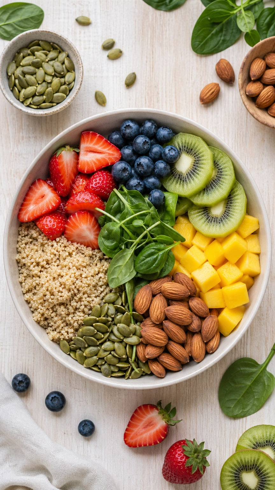
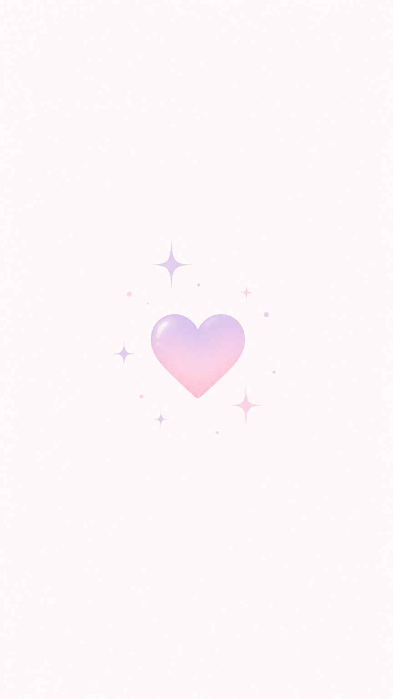

Você chegou na
semana 16 ✨
Quarto mês completo. O segundo trimestre está em pleno ritmo — mais energia, menos náusea, e um bebê que cresce a cada dia.
Vem descobrir o que está acontecendo agora.

Seu bebê tem o tamanho de um abacate 🥑
Da cabeça ao bumbum, já é possível ver cada detalhe em um ultrassom — cílios, sobrancelhas e até os dedinhos em movimento.
O coração do seu bebê bate até 3x mais rápido que o seu
E já bombeia cerca de 25 litros de sangue por dia — um sistema cardiovascular em pleno funcionamento.

O que seu bebê
já sente agora
Você já sentiu
algum movimento?
A maioria das mamães sente entre as semanas 18 e 22 — mas algumas percebem antes, como uma bolha ou flutter suave.
Seu corpo
esta semana 🌸

O volume de sangue aumentou até 50%. Você pode notar aquele brilho no rosto — mas também gengivas mais sensíveis e um apetite que não avisa antes de chegar.
Sintomas comuns agora
Por que você sente
tudo isso?
Dois hormônios explicam quase tudo:
Está conseguindo
dormir de lado?
A partir da semana 16, dormir de lado — de preferência o esquerdo — melhora a circulação para o bebê e evita pressão na veia cava.

Priorize essa semana
O que evitar agora
Checklist da semana 16 ✅
Procure o médico
se sentir 🚨
Consulta de pré-natal
agendada?
Essa semana é o momento ideal para solicitar o encaminhamento do ultrassom morfológico — precisa ser feito até a semana 20.

Semana 16
concluída 🎉
Você e seu bebê chegaram até aqui juntos. Na próxima semana, ele continua crescendo — e você pode estar cada vez mais perto de sentir os primeiros chutes.
DoceGestar — Cada semana, uma nova descoberta.